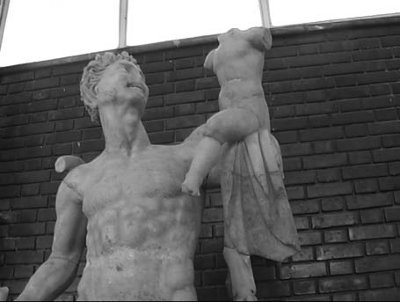

Bir Satiros, tanrı Diyonisos'u bebekken koluna almış, severken
(Afrodisyas Müzesi)
Aydın'dan Muğla'ya giderken Gökbel denen yerde, uzak yıldızlardan düşmüşe benzeyen kayalık tepeler arasından bir yol geçerdi. Ve bu yol kıvrıla kıvrıla, ine çıka dere tepe zorlukla ilerlerdi. Akıllara durgunluk veren bu bir başka gezegen sessizliğinde, her an, o ana dek hiç görülmemiş bir yaratık, örneğin bir Satiros ya da perikızları çıkabilirdi karşınıza... Gene bu kayalar arasından kaynaklanıp söğütlerin gölgesinde akan, yüzeyi ayna gibi parlak bir çay da şaşırtabilirdi insanı... Günümüzde Çine Çayı denen bu akarsuya, ilkçağlarda Marsyas Çayı deniyordu... Ve o zamanlar bu çayda yıkanıp güneşlenen, kıyılarında ezgiler söyleyip oyunlar oynayan perikızları da vardı... Gene zaman zaman Marsyas Çayı'nın yaratılış serüvenini dillendiren yanık kaval ezgileri de dökülürdü bu dağlardan...
Bu çaya adını veren Marsyas, Frigya krallığı zamanında büyük ve ünlü bir müzisyendi. Tanrı Diyonisos'un alayında da çalgıcılık yapan ve bir Satiros olan Marsyas; dağlarda bayırlarda gezip tozarken, o güzelim Akdeniz göklerinde duyduğu ve yaşadığı varolma sevincini, yedi delikli kavalıyla yanık ezgilere dönüştürür; sonra da onları bütün Akdeniz coğrafyasındaki acılı halklara yansıtırdı... Marsyas; yoksul ezgiler döktürdüğü bu kavalının, tanrı Apollon'un icat ettiği üç telli Grek lirinden çok üstün olduğunu düşünüyordu hep. Zaten "ney"in atası olan onun bu kavalına, "Frigya kavalı" da deniyordu.
Bazı ozanlar; insan gönlünü çok uzak diyarlara götürüp getiren Marsyas'ın bu kavalını, aslında güzel sanatlar tanrıçası Atena'nın geyik boynuzundan yaptığını söylüyorlardı. Çünkü tanrıça Atena, Olimpos tanrılar ülkesinde bunaldığında çok sevdiği dünyamıza gelir, bu kavalını çala çala, dağ bayır demeden gezer tozar, kimselere anlatamadığı aşklarını yanık ezgilere dönüştürürdü... Evren güzeli tanrıça Afrodit'le Baştanrı Zeus'un karısı Hera bir gün; Atena'nın müzikteki olağanüstü yeteneğini çok kıskandıklarından, onun bu kavalı çalarken yanaklarının balon gibi şiştiğini ve bu yüzden de çok çirkinleştiğini söylediler yüzüne karşı. Onu inceden inceye alaya aldılar... Bunun üzerine Atena da doğruca ayna gibi duruluğuyla ünlü Çine Çayı'na gitti ve kaval çalarken dupduru akan suda görüntüsünü seyretmeye başladı. Gerçekten de kavalı öttürebilmek için balon gibi şişirdiği yanaklarını görünce kavalını fırlatıp attı hemen! Ve onu bulup çalanın da başına umulmadık illetler gelsin diye ilençler yağdırdı!.. Bir süre sonra da Marsyas, bu büyüleyici ve ilençli kavalı bulup çalmaya başladı...
Müzisyen Marsyas; yeni bulduğu bu kavalıyla keçi ayaklı tanrı Pan ve şarap tanrısı Diyonisos için de pek çok aşk ve oyun ezgileri besteledi. Zaten Diyonisos'un doğa dinine derinden bağlıydı. Aynı zamanda yaşam ve bereket tanrıçası Kibele'nin de çok yakın dostuydu. Bir ara sevgilisini yitiren çok memeli Ana Tanrıça Kibele, büyük bir üzüntüye kapılmış, umarsız çıkmazlara saplanmıştı. O yüzden Marsyas da onu biraz avutabilmek için hiç yalnız bırakmadı ve bütün Anadolu'yu yer yer ezgiler söyleyerekten, birlikte dolaşmaya başladılar... İşte tanrıça Kibele'yle birlikte, kavalıyla yanık ve yoksul ezgiler döktüre döktüre böyle yol alırlarken, Aydın taraflarında, Sultanhisar (Nisa) beldesine düştü yolları. Tam o sırada da tanrı Diyonisos; Satiroslardan ve Maynadlardan oluşan sazlı sözlü alayıyla birlikte, zaten kendisinin doğum yeri olan aynı kentteydi. Hatta güzel sanatlar ve musiki alanında büyük yeteneği olan ışık tanrısı Apollon da oradaydı. Diyonisos'un çalgılı cümbüşlü alayında, içtiği şarabın etkisiyle de coşan Marsyas; Apollon'un üç telli lirine durup dururken meydan okudu... Kendi kavalından döktürdüğü ezgilerin, müzisyen tanrı Apollon'un üç telli lirinden çıkan ezgilerden çok üstün olduğunu söyledi çevresindekilere! Haliyle bu meydan okumayı anında duyan tanrı Apollon, Marsyas'a bir ezgi yarışması önerdi. Öneriyi sevinçle kabul eden Marsyas'la tanrı, hemen bir yarışma başlattılar... Frigya kralı Midas'la birlikte sanatçıların esinperileri olan dokuz kişilik Musa'lar da bu yarışmada hakem oldular.
Tanrı Apollon, Olimpos'taki tanrıları bile coşturan en ünlü ezgilerini dillendirmeye başladı. Hem liriyle, hem de sözlü şiirleriyle... Ve insanoğlunun değil ulaşması, düşlemesinin bile söz konusu olmadığı mutluluklar ülkesi Olimpos'u anlatmaya çalışıyordu... Oradaki tanrıların şehvet, dinginlik ve varsıllık içinde; bütün insani illetlerden uzak yaşamlarından söz ediyordu... Yeryüzündeki bütün insanların; tanrıların bu yaşamlarını sürdürmeleri için ellerinden geleni yapmaları gerektiğini söylüyordu. Bu dünyadan göç ettikten sonra, Olimpos'taki tanrıların onları ödüllendireceğinden söz ediyordu... Tanrı Apollon; yer yer coşkulu, yer yer ürkütücü notalarla dillendiriyordu bütün bu anlatmak istediklerini...
Sıra Marsyas'a gelince, o da tanrıça Kibele'nin mutsuz aşklarını anlatan ezgiler döktürdü önce... Sonra da Anadolu'nun dağlarını, denizlerini betimleyen, Akdenizli halkların konukseverlik ve karşılıklı dayanışma duygularını dillendiren ezgileri, kavalından yanık yanık üflemeye başladı... Ve Apollon'un söylediklerine ters olarak, Akdeniz halklarının bu güzelim topraklarda, tanrıların ve onların elçilerinin elinde oyuncak ve köle olduklarını da anlattı... Aslında bütün insanların bütün dünya coğrafyalarında, tanrılar kadar mutlu olmamaları ve kardeşçe yaşamamaları için hiçbir neden olmadığını dillendirmeye çalıştı. O yüzden tanrıların insanlara biçtiği yazgıyı el ele verip değiştirmekten söz etti. Marsyas'ın inceden inceye, öksüz kavalından döktürdüğü bu ezgiler, dağlardan taşlardan ebemkuşakları gibi düğüm düğüm çözülerekten bütün Anadolu'yu harmanladı. Oralardaki insanların gönüllerine sindi. Perikızları da, bu kavalın yaydığı yanık ezgilerden çok etkilendiler; kendilerinden geçtiler. Ne var ki iş oylamaya gelince, tanrı Apollon'un şerrinden ürktükleri için haliyle oylarını ondan yana kullandılar. Hakemler kurulundaki kral Midas ise, ülkesi Anadolu gibi buram buram insanlık ve aşk tüten o yanık ezgilerin büyüsüne kapıldığından, tanrı Apollon'u bırakıp ölümlü müzisyen Marsyas'tan yana kullandı oyunu! Haliyle kavalcı Marsyas, bire dokuz yenilmiş sayıldı! Çünkü Musa'ların sayısı dokuzdu! Bu sonuç üzerine müzisyen Marsyas; tanrı Apollon'un parmaklarıyla çaldığı liriyle yetinmeyip araya sözlü şarkı da karıştırdığı için yarışmanın adil olmadığını öne sürdü. Çünkü hem kaval çalmak, hem de sözlü şarkı söylemek olası değildi! Bunun üzerine tanrı Apollon da çalgıların tersinden çalınarak yarışmanın yenilenmesini önerdi!.. Kavalı tersinden üfleyip çalmak da mümkün olmadığından Marsyas, haliyle yenilmiş sayıldı...
Ne var ki tanrı Apollon; müzisyen Marsyas'ın hem Olimposlu tanrılara meydan okumasına, hem de yarışmanın adil olmadığını öne sürmesine çok öfkelendi. Bu düpedüz tanrılara bir isyandı... Zaten becerisine ve dehasına güvenip bir tanrıyla bir ölümlünün yarışmaya girmesi de ne demek oluyordu? Böylesi duyguların öfkesiyle hemen Marsyas'ın derisini yüzdürüp, örnek olsun kabilinden, oralardaki bir mağaranın önüne astırdı!..
Ama sanatçıların esinperileri olan Musa'lar da; Apollon'un şerrinden ürküp oylarını ondan yana kullanmış olmalarına ve bu yüzden de Marsyas'ın böyle bir yazgıya kurban gitmesine çok üzüldüler. Sonra da öylesine çok ağladılar ki, bu gözyaşlarından hemen oracıkta oluşan bir selcik, giderek bir çaya dönüştü... İşte günümüzde Çine Çayı denen bu akara, Marsyas Çayı demeye başladı o çağın insanları...
Ne var ki Akdenizli halkların çilelerini dillendirmek için kavalından üflediği ezgiler, yalnızca yüreğine ve kafasına değil, derisine bile sinmişti Maryas'ın... O yüzden Anadolu dağlarından yoksul bir kaval sesi çözülüp geldiğinde, onun mağara ağzına asılmış o derisi hemen ürperir, titremeye başlardı...
Yarışmada hakem olan kral Midas'a gelince... Tanrı Apollon; bir tanrı ezgisinin benzersiz güzelliğini sezemeyecek kulakları olduğu gerekçesini öne sürerek, oyunu Anadolulu hemşehrisi Marsyas'tan yana kullanan Frigya kralı Midas'ın kulaklarını da, hemen eşek kulaklarına dönüştürüverdi!..
Kral Midas Kimdi?
Frigya'nın ilk kralıydı Midas ve Anadolulu Anatanrıça Kibele'ye tapıyordu... Hatta onun adına yaptırdığı tapınağın da başrahibiydi... Gene Midas, doğa ve şarap tanrısı Diyonisos'a da gönülden bağlıydı... Bu tanrının insanlara cömertçe dağıttığı doğa ve dünya nimetlerinden payını her zaman almasını bilirdi. Zaten Anadolu'da ve yakın coğrafyalarda, dağ-bayır demeden tanrı Diyonisos'la birlikte dolaşan yarı insan, yarı hayvan bedenli Satiroslardan oluşan alayını da buyur ederdi sarayına sık sık. Onları uzun süre, gönülden ağırlardı...
İşte arkasındaki şen şakrak "Satiroslar"dan ve kadın "Maynadlar"dan oluşan alayıyla, bütün Akdeniz ülkelerine doğa sevgisi, yaşam sevinci ve barış saçarak giden tanrı Diyonisos; gene her zamanki gibi Midas'ın ülkesi Frigya'ya da uğradı bir gün. Haliyle kral onları sarayında verdiği görkemli bir şölenle iki gün iki gece ağırladı... Ne var ki şölen sırasında şarabı fazla kaçıran Satiroslardan biri, sarayın bahçesindeki güllerin arasında uyuyakalmış, Diyonisos'un alayı da onu almadan saraydan ayrılıp gitmişti... İşte Kral Midas; tanrı Diyonisos'un alayından olan bu Satiros'u on gün on gece, sazlı sözlü eğlencelerle konuk etti sarayında. Sonra da götürüp tanrı Diyonisos'a teslim etti. Kralın konukseverliğinden son derece etkilenen tanrı, ona kendisinden bir şey dilemesini istedi hemen... Midas da, içindeki iblisin dürtüsüyle olacak, "her dokunduğu şeyin altına dönüşmesini" istedi. Ne var ki Diyonisos, böyle bir yeteneğin çok uğursuz bir şey olduğunu söyleyemedi krala. Ve dileğini hemen yerine getirdi...
Artık kral Midas'ın dokunduğu her şey, haliyle kaskatı altın kesilmeye başladı!.. Örneğin ayakkabıları, el sürdüğü kapılar, açtığı pencereler hep altına dönüşüyordu... İşin kötüsü eline aldığı yiyecekler de, içeceği su da altına dönüştüğünden artık doğru dürüst yiyip içemez oldu... Haliyle açlıktan susuzluktan ölecek durumlara düştü... Sonunda Diyonisos'a yalvar yakar olup ayaklarına kapandı. Kendisini bu hallere düşüren o uğursuz yeteneği hemen geri almasını istedi. Kralın durumuna acıyan Diyonisos da, gidip Gediz Nehri'nde yıkanmasını salık verdi ona. Midas da hemen nehre gidip iyice yıkandı. Yıkandığı ırmağın suları altın rengine kesilip öylece, sarı sarı aktı birkaç gün süresince... Hatta bu sular, kıyıdaki kumların üstünde sapsarı altından bir tül bile oluşturdular! Böylece Midas da, bu her tuttuğunun altına dönüşmesi illetinden kurtuldu; zenginlik hırsından da arındı... Artık kendini tümden doğaya, doğanın sunduğu nimetlere, güzel sanatlara, özellikle musikiye adadı...
İşte yukarıda da anlatıldığı gibi günlerden bir gün, tanrı Apollon'la bir ölümlü olan Marsyas arasında düzenlenen ilk musiki dalındaki yarışmada kral Midas; dokuz esinperisi güzel Musa'lar ile birlikte hakemlik etti. Ama oyunu tanrıdan yana değil de Marsyas'tan yana kullandığı için tanrı Apollon da öfkelenip onun kulaklarını eşek kulaklarına dönüştürüverdi!..
Artık bu durumundan çok utanan kral Midas, kulaklarını saçlarının içine gömüp saklamaya başladı ve başına da bir kalpak geçirdi... Haliyle sarayından çıkıp halkın arasına da giremiyordu... Ve onun bu sırrını yalnızca sarayın berberi biliyordu. Ve kral bu sır konusunda da onu sık sık uyarıyordu: Durumunu halka duyurması halinde bunu yaşamıyla ödeyeceğini söylüyordu hep... Ne var ki işi gereği zaten geveze olan berber, can korkusuyla saklamaya çalıştığı bu sırrı birilerine söyleyemezse, hemen öleceğini düşünmeye başladı... Bu yüzden sık sık kimsesiz kırlara atıyordu kendini... Gene böyle kırlara sığındığı bir gün, sazların bulunduğu bir yerde, derince bir çukur açtı... Bir duyan, bir gören olmasın diye sağına soluna iyice bakındı. Kimsenin duymayacağından emin olduktan sonra da açtığı o derin çukura eğilip; "Midas'ın kulakları... var... Midas'ın eşek kulakları var!.." diye bağıra bağıra döktü içini... Artık bu ürkünç ve saklanması olanaksız sırrın ağırlığından kurtulan berber, kimselerin de kendini görüp duymadığından emin olarak, bir kuş hafifliğiyle hemen saraya döndü...
Ne var ki berberin açtığı çukurun çevresinde, daha berber saraya dönmeden bir yel esmeye başladı hafiften hafiften... Bu yelle salınan ve sallanan sazlar; berberden duyduklarını, inceden inceye hışırdayaraktan, oradan gelip geçenlere fısıldamaya başladılar... Onlar da kente gidince sazlardan bu duyduklarını kulaktan kulağa yakınlarına duyurdular... Böylece kral Midas'ın eşek kulakları olduğunu, bütün Frigya halkı öğrendi!
Haliyle halk, bu gerçeği gözleriyle görebilmek için kralın başını açmasını istemeye başladı... Ne var ki Frigyalıların, yöneticilerini bu yakından tanıma tutkusu, giderek daha sonraki halklara da umarsız ve bulaşıcı bir hastalık gibi bulaşacaktı...
Ve egemen krallar da, kendilerini hep kusursuz göstermek ve gerçek kimliklerini saklamak için, buyruklarındaki halklara durmadan kan ağlatacaklardı...